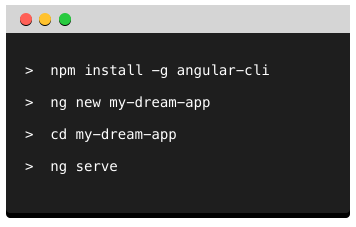

Angular Formation
DAVIN Kevin

- Full-stack² Dev
- Agile Addict !
- Main committer on AngularJS's lib
- Angular, Java and other tech Trainer
Everyone will learn !
There are no stupid questions,
only stupid answers

 Slides
Slides
Errors, better way to do, idea ? Contribute !
Summary
- The past, present and future
- Angular as a platform
- Deep dive into Angular
- Testing for real !
Before 2003, the web was mostly...
Microsoft Internet Explorer 6

Major browser version of Microsoft during 5 years !
And something change everything...
in 2004 ?
Mozilla Firefox
Supports Javascript | W3C | Standard API
Google Chrome
Supports Javascript | W3C | Standard API
and wonderful tools for web developer
And lots of alternatives...
And some other(s) disappear

We have multiple browser...
... so we have to adapt our website for each of them
... or we can use libraries to abstract complexity !
Javascript based
Support all browser with only one syntax
Javascript based
Support all browser with only one syntax
ExtJS
Javascript based
User Interface Library
Others prefers...

Adobe Flash
ActionScript executed in a plugin
From 1996 to 2016
(more or less...)
Microsoft SilverLight
C#, .NET... executed in a plugin
From 2007 to 2011
Google GWT
JS generated from Java at compile-time !
Since 2006 and still here !
Since 2009, a lots of JS frameworks appear
Popularity of each
Learning from previous generation mistakes...
... new frameworks rise
Popularity of each
We have to built better, smarter and simpler application
We call it, Progressive-Web-App
Progressive
Responsive

Always up-to-date
syncInstallable
get_appOffline


Secured
httpsRe-engageable
notifications
Javascript is becoming the assembly language of the web


In Angular world, you can choose


This is why we call it Angular
Angular internally is written in
and this language is preferred (it simpler to use and learn)
Angular2 Dart
Separate team, separate implementation, separate versions

So, a little example of Angular App
Demo time is generally when something goes wrong...
What we just seen ?
@Component@NgModule- Use of Pipe and Directive in HTML
Did you see something else ?
Do you like Ice-cream ?
We will build the web-site of an Ice-Cream company...
Any resemblance to real and actual brands is purely coincidental
To do that
We need to have good tools
NodeJS
AngularCLI
WebStorm
IntelliJ IDEA Ultimate
VSCode
a Good Terminal App
Essential command for Angular CLI
Create a project
$ ng new <NAME_OF_PROJECT> --prefix gi --style sass
Generate an element
$ ng generate component <NAME_OF_ELEMENT>
$ ng g c <NAME_OF_ELEMENT>
Can be used to generate directive, pipe, service, class, interface, enum and module
Serve your App
$ ng serve
Test your app
$ ng test
Open the Angular doc
$ ng doc <SEARCH_WORD>
See help about the CLI
$ ng --help
Angular
All is about Component
EVERYWHERE !
An app are just some buildings block

A component is:
- Logic in TypeScript
- Vue in HTML
- Style in SASS (or other)
Template
<div> My title is {{ title }} </div>
Property Bindings
We use standard HTML for property binding
<h3 [hidden]="isHidden" [class.active]="favoriteHero === hero" >
Your favorite hero is: {{ favoriteHero }}
</h3>
Structural Directive
All the directive inducing a dom modification outside of the current element are called Structural Directive
- ng-if
- ng-switch
- ng-repeat
The syntax is little bit special...
<p *ngIf="condition">
condition is true so this block is shown.
</p>
<tr *ngFor="let movie of movies">{{movie.name}}</tr>But Why ?
Using HTML Template Element
<template>
<div>A super template !</div>
</template>This template isn't rendered by the browser but can be used
The asterisk (*) effect
<p *ngIf="condition">
A super template !
</p>
<template [ngIf]="condition">
<p>
A super template !
</p>
</template>So, the * is just a syntaxic sugar
And we can write our own Structural Directive !
Local template variable
We can define a template variable associated to a dom element
<video #player src="foo.mp4"></video>
<button (click)="player.play()"></button>
Component Logic
The brain of the component...
Shell up a Component Declaration
import { Component } from 'angular2/core';
@Component({
selector: 'todo',
template: `<h1>{{ title }}</h1>`
})
export class TodoComp {
title : String = 'A super presentation !!';
}
Using a service in my component
import { Component } from 'angular2/core';
import { MyService } from './myservice';
@Component({
selector: 'todo',
template: `<h1>{{ title }}</h1>`
})
export class TodoComp {
title : String = 'A super presentation !!';
constructor(private _myService : MyService){} // DI by constructor
}
Now, Components have an intuitive LifeCycle
- OnChange - input|output binding value changes
- OnInit - after the 1st OnChange
- DoCheck - dev's custom change detection
- AfterContentInit - after comp content initialized
- AfterContentChecked - after every check of comp content
- AfterViewInit - after comp's view(s) are initialized
- AfterViewChecked - after every check of a comp's view(s)
- OnDestroy - just before destruction
And we can use Interface to declare it
import { Component } from 'angular2/core';
import { MyService } from './myservice';
@Component({
selector: 'todo',
template: `<h1>{{ title }}</h1> <emitter></emitter>`,
})
export class TodoComp implements OnInit {
title : String = 'A super presentation !!';
constructor(private _myService : MyService){}
ngOnInit() { console.log('The Component is initialised'); }
}
Communication
We have now a component, but we want to communicate with other element
Again, all is in component !
Input(s)
import {Component, Input} from 'angular2/core';
@Component({
selector: 'counter'
template: `...`
})
export class CounterCmp {
@Input() counterValue = 0;
}
<counter [counterValue]="10"></counter>Inputs(s) with Alias
import {Component, Input} from 'angular2/core';
@Component({
selector: 'counter'
template: `...`
})
export class CounterCmp {
@Input('start') counterValue = 0;
}
<counter [start]="10"></counter>Output(s) as Events !
import {Component, Input} from 'angular2/core';
@Component({
selector: 'counter'
template: `...`
})
export class CounterCmp {
@Input('start') counterValue = 0;
@Output() stateEmitter = new EventEmitter<State>();
}
<counter [start]="10" (stateEmitter)="show($event)"></counter>Output(s) with alias too (of course...)
import {Component, Input} from 'angular2/core';
@Component({
selector: 'counter'
template: `...`
})
export class CounterCmp {
@Input('start') counterValue = 0;
@Output('finish') stateEmitter = new EventEmitter<State>();
finish() {
this.stateEmitter.emit(myState);
}
}
<counter [start]="10" (finish)="show($event)"></counter>Bi-Directional communication
- [Input] as data-binding
- (Output) as event-binding
NgModel Directive
<input [(ngModel)]="foo.bar">
This syntax is a mix between property and event bindings
Angular @NgModule
The house of a feature
Including the business logic in service
And use DI everywhere !
Create an injectable service
@Injectable
export class MyService {}
Register it in providers
import {MyService} from './my.service.ts';
...
providers : [ MyService ]
Inject it !
import { Component } from 'angular2/core';
import {MyService} from './my.service.ts';
@Component({...})
export class TodoComp {
constructor(private myService: MyService){}
}
Hierarchical Injector
The injector of Angular is inspirited by Dagger